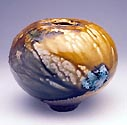
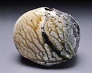
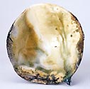
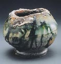
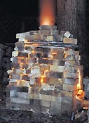
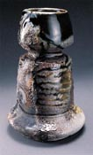
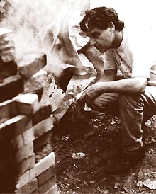

| Salku
An experimental process. Article by Rick Berman.
Originally published in Clay
Times Magazine.

Ironically, this was the title of my MFA Thesis at the University
of Georgia in 1973. I'll try to explain as simply as possible
where this research has taken me in the last 24 years.
From
the very beginning of my clay life in 1968, I have felt this amazing
affinity for those nasty wood-fired pots from the “Six Ancient
Kilns” of Japan: Shigaraki, Tamba, Echizen, Tokoname, Seto,
and Bizen. The whole idea of a pot being put into a kiln and allowing
it to become nature itself just blows me away! I guess the things
going on in the U.S. in the '60s and early '70s that
were closest to these Japanese pots were what Don Reitz was doing
with salt and Paul Soldner and Howard Shapiro were doing with raku.
I
was experimenting with both of these techniques in graduate school
and somehow had the idea to combine the two: thus SALKU. I built
a small, hard brick updraft top-loading kiln and fired with a homemade
venturi burner and propane. The pots were stacked not touching and
I used about five pounds of salt (but who's counting?) when
the kiln got to cone 06. Salt will volitalize at cone 06 but obviously
if the clay isn't vitrified, the salt just goes through the
cross section of the pot wall until it “fills up.” The
net result was a slight sheen, but no orange peel surface. I took
the pots out of the kiln hot and smoked them in sawdust. The slight
glaze sheen crazed because of the thermal shock, and a very subtle
white crackle occurred. The key word here is “subtle.”
Now you might say at this point, “What's the point?”–
and that's pretty much what I said, too – but it was
research and I did graduate.
Now
fast forward to 1977 and a workshop at Tennessee State University
in Johnson City. We packed the pots in a soft brick kiln, lit the
burner, set it to what I thought was a slow, even flame, and went
inside to look at slides. After probably an hour and a half or so,
we went back to the kiln to find the most beautiful white heat I've
ever seen...at least cone 8. All I could think to do at this point
was to throw in about ten pounds of salt, let it do its salt thing
for about 20 minutes, and shut it down. We took the top off and
started to unload the pots. It was without a doubt the biggest mess
I've ever seen! Pulling the pots apart was kind of like pulling
taffy—total disaster except for one pot that was in the bottom
middle of the whole mess. To this day, it is probably the most beautiful
pot I've ever seen. It was dry, wet, black, orange, grey,
with beautiful scars and warps. Except for Marvin Tadlock, who made
the pot, and me, people were not amused. (Too bad we live in such
a product oriented society.)
Well,
anyway, fast forward again to 1990 when I was doing a raku workshop
for my dear friend Tom Zwierlein at his studio in the country near
Lexington, Kentucky. On the second day, he asked if I'd like
to try a saggar salt technique he'd been working with. I'm
always up for stealing other people's ideas, so of course
I said yes. He took a saggar (a Lays potato chip can) and went to
work. He lined the bottom of the can with charcoal and vermiculite,
then pots, then salt, then charcoal, then pots, etc. until the can
was full. We put the can in the fiber drum raku kiln, fired it to
1850 F degrees, opened the kiln, took out the saggar, and unloaded
the pots and quenched them in water. Every pot was a killer! Orange,
red, black, grey, white, spots, lines, etc.
After that, I started using the technique in my workshops and
teaching. Then one day about two years later, a light bulb went
on. SALKU! 1973! Duh. There were some problems at this point.
Number one, the salt was eating up the fiber drums, and if the pots
were fired much below about cone 04, they turned into chia pets
in about two weeks and totally disintegrated. This wasn't
too good for public relations. I felt kind of like a traveling spot
remover salesman who needs to keep moving.

At any rate, I built a small soft brick (scrap) updraft Salku
kiln and corbled in the top with a 5-inch flue. The kiln measured
2-1/2 bricks across and about 15 courses high, roughly six or seven
cubic feet. The whole kiln became a saggar, so we eliminated the
potato chip cans. Now I'm tumble stacking tenmoku and ash-glazed
pots with a half bag of charcoal all through the pots and I'm
firing to approximately cone 10 in four or five hours. I use about
5 lbs. of salt and the pots are getting some beautiful black orange
peel from the melting charcoal, and sometimes stick together so
when they are pulled apart, some dramatic scarification is happening.
Remember those nasty Japanese pots mentioned above? Well, with a
lot of help from nature, I'm seeing surfaces now that I never
thought were possible. Making pots is even more of a joy when you
love the surface possibilities so much that you literally can't
wait to see the next group of pots come out of the kiln. I am very
grateful.
Rick
Berman is a studio potter, workshop leader, and ceramic
historian. He has served as associate editor of Clay Times and teaches
ceramics and sculpture at Pace Academy in Atlanta, Georgia.
Article and images reproduced by kind permission of
Clay Times Magazine and
Rick Berman. © Rick
Berman.
More Articles
|
{kind=link}
{kind=link}
{kind=link}
{kind=link}
{kind=link}
{kind=link}